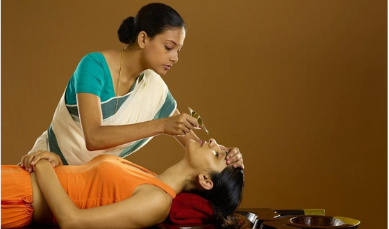
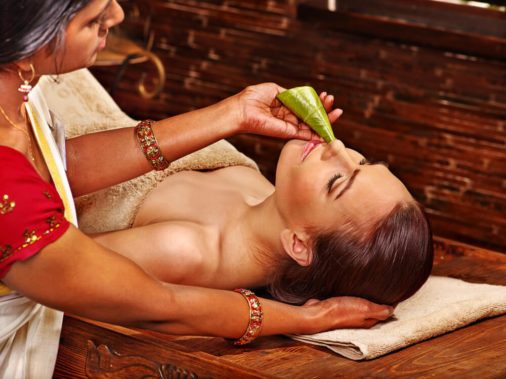
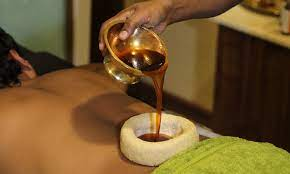
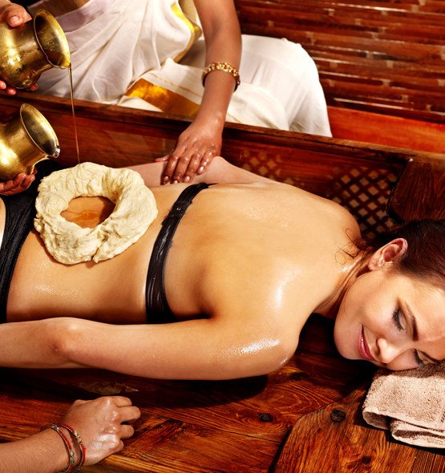
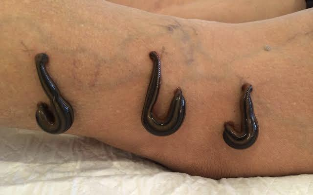

PANCHAKRAM :
| S.NO |
TREATMNT |
TIMING |
FEES |
| 1 |
Nasyam |
8:30-9:30am |
Rs650 |
| 2 |
Vamanam |
10:30-11:00am |
Rs550 |
| 3 |
Virevhanam |
7:30-9:30am |
Rs1000 |
| 4 |
Vasti |
12:30-2:30pm |
Rs800 |
| 4 |
Raktamoksha |
3:30-4:00pm |
Rs500 |
NASYAM:
Nasyam is an Ayurvedic treatment to cure headache or ENT related disorders such as sinusitis, migraine, ear, nose or throat. During this procedure, medicated powder or juice and herbal oils are applied through the nostrils.


VAMANAM:
Nasyam is an Ayurvedic treatment to cure headache or ENT related disorders such as sinusitis, migraine, ear, nose or throat. During this procedure, medicated powder or juice and herbal oils are applied through the nostrils.In the present clinical practice Madanaphala (Randia dumetorum) is mainly used for Vamana Karma. Apart from Madanaphala, five other drugs, and in total 355 formulations are described in Charaka Samhita; one of them is Krutavedhana (Luffa acutangula) kalpa (formulations).


VIREVHANAM:
Virechana is a Sanskrit word that means “laxative” or “purging” and may refer to any substance used purging. Virechana is one of the therapies used in ayurveda, the traditional Indian medical system. More specifically, it is one of the panchakarma toxin-eliminating treatments.Virechana is used to treat skin diseases, various bowel and gastrointestinal disorders, diabetes, asthma, headaches and gynecological problems.

VASTI:
Vasti (Enema) treatments are extremely effective in removing Vata-based toxins from the system. There are two Vasti treatments - Niruha Vasti and Anuvasana Vasti - that are administered according to the patient's body condition and treatment requirements. Anuvasana Vasti is Enema Therapy using medicated oils.


RAKTAMOKSHA:
Rakthamokshana is done to remove deep-seated circulating toxins from the blood. It relieves stagnation and congestion in varicose veins. It improves circulation to a specific area, reduces inflammation and improves healing of a specific location along with the entire system in general.Raktamokshana is an effective blood purification therapy, in which carefully controlled removal of small quantities of impure blood is conducted to neutralise accumulated toxins.

To Know More
To Home Page